Empanadas argentinas hechas a mano en Rohnert Park, California. Marca, ilustraciones y cartelería desde cero, con una consigna corta: que se vea artesanal, porque la producción es artesanal y limitada.
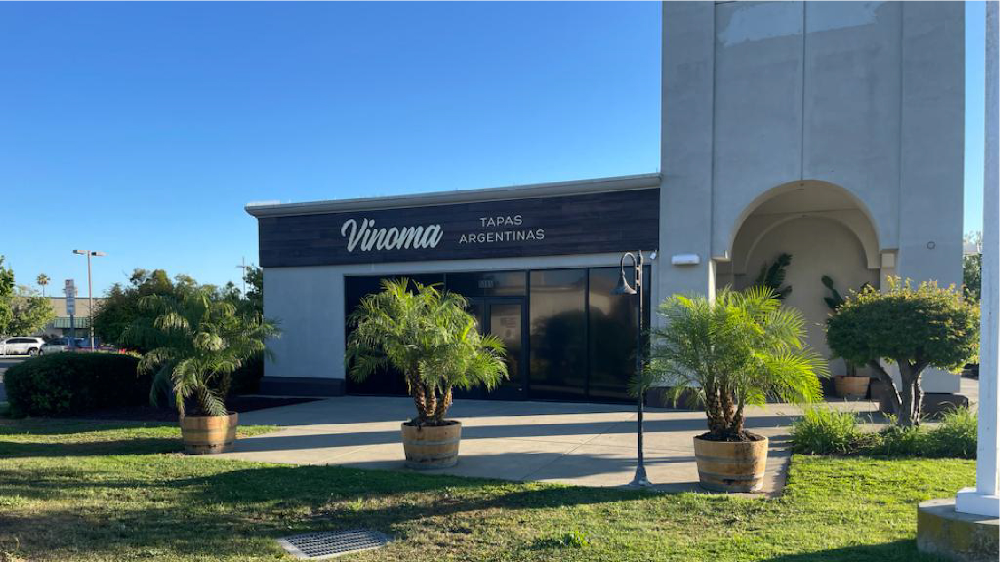
Vender empanadas argentinas en California: al cliente hay que explicarle qué está comprando, sin que parezca comida industrial.
La producción es limitada y hecha a mano, así que la marca tenía que sostener esa promesa desde el primer contacto —una fachada, una vidriera, un cartel en la parada del colectivo. En un rubro donde casi todo simula ser artesanal, eso es un problema de dibujo, no de adjetivos.
Se sumaba una segunda tarea: el menú mezcla clásicos argentinos con inventos americanos, y cada variedad necesitaba distinguirse de las demás sin romper el conjunto.
Un logo solo no alcanzaba para llenar un local. Dibujamos las empanadas a lápiz, una por una, y ese repertorio pasó a ser el material de la marca: cubre el mantel, la carta, las tarjetas y la vidriera, y cada superficie puede decir algo distinto sin dejar de ser la misma marca.
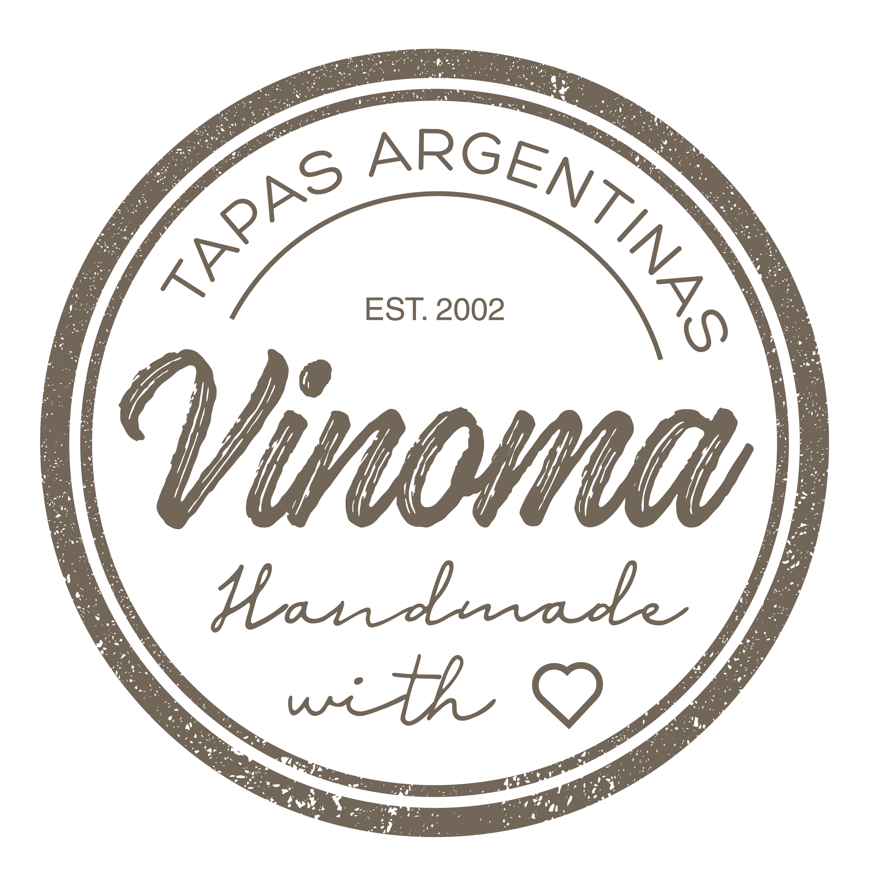
El logotipo es una pincelada con la textura del trazo a la vista: irregular a propósito, para que se lea la mano. El sello redondo es la versión que aguanta bordada, grabada en madera o estampada sobre papel kraft.
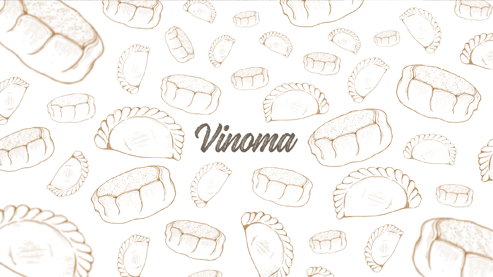
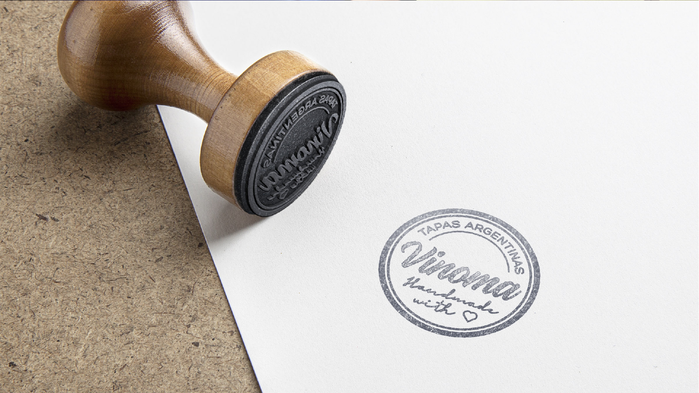
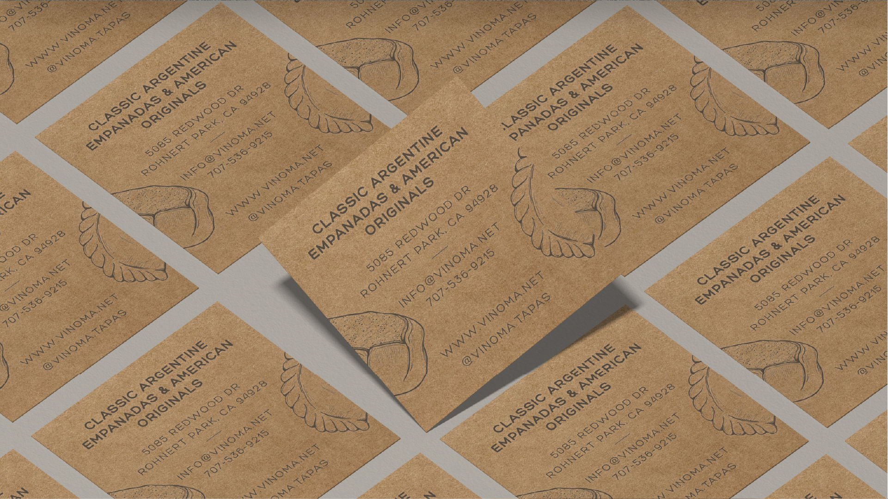
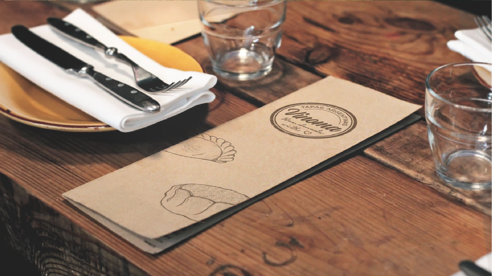
Fuera del local, la marca compite con fotos de comida a tamaño gigante. La solución fue no pelear: fondo claro, mucho aire, el nombre en pincelada y una sola variedad por pieza, nombrada en inglés con su origen abajo — Classic Argentine, American Original, Naturally Italian.
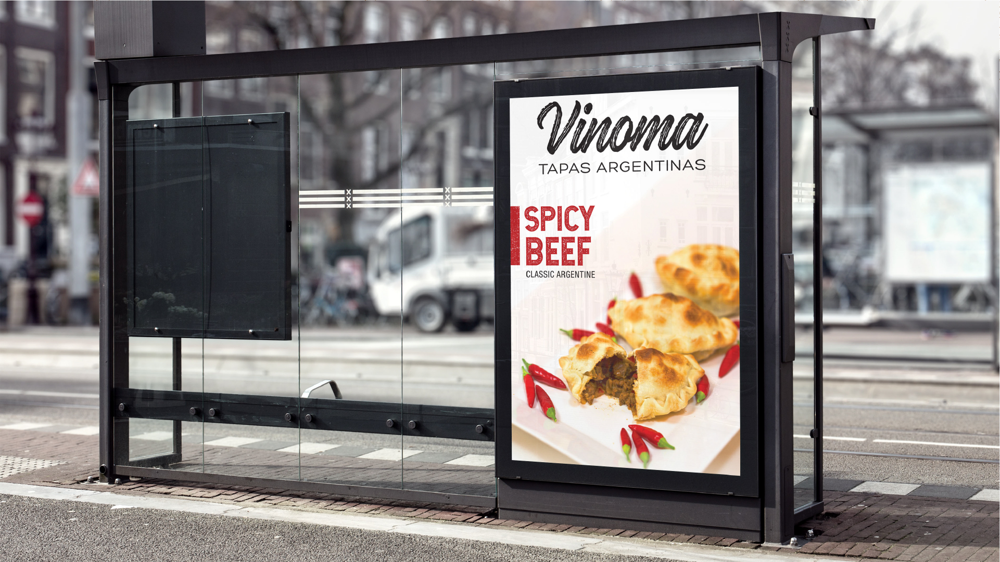
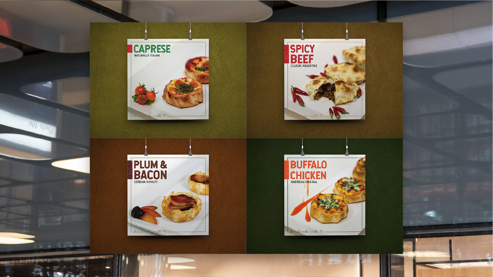
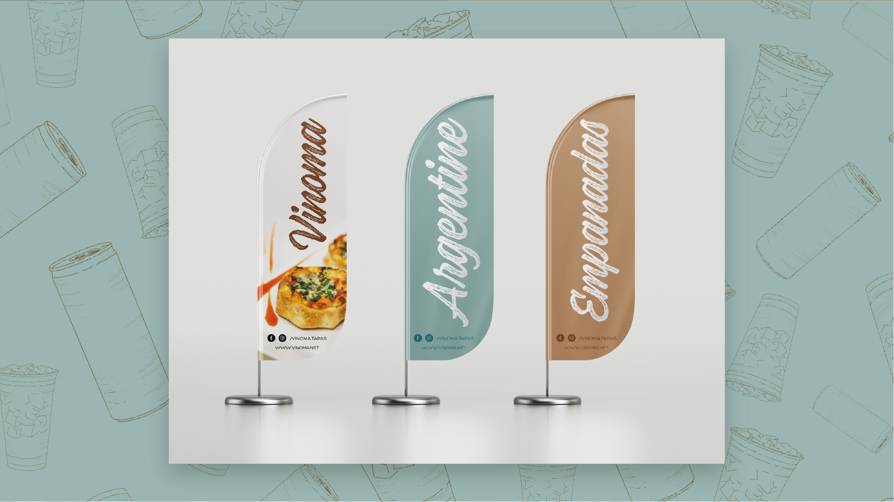
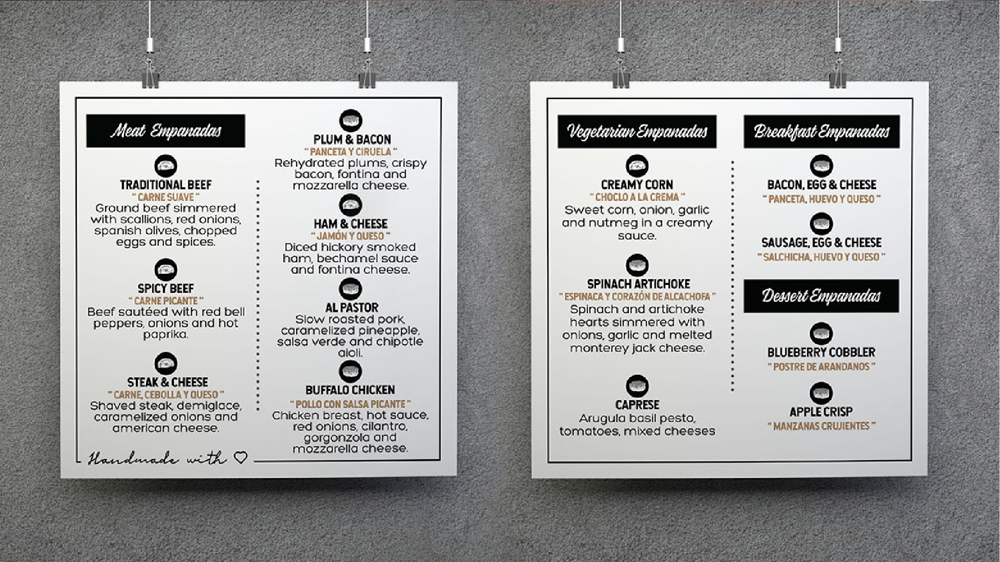
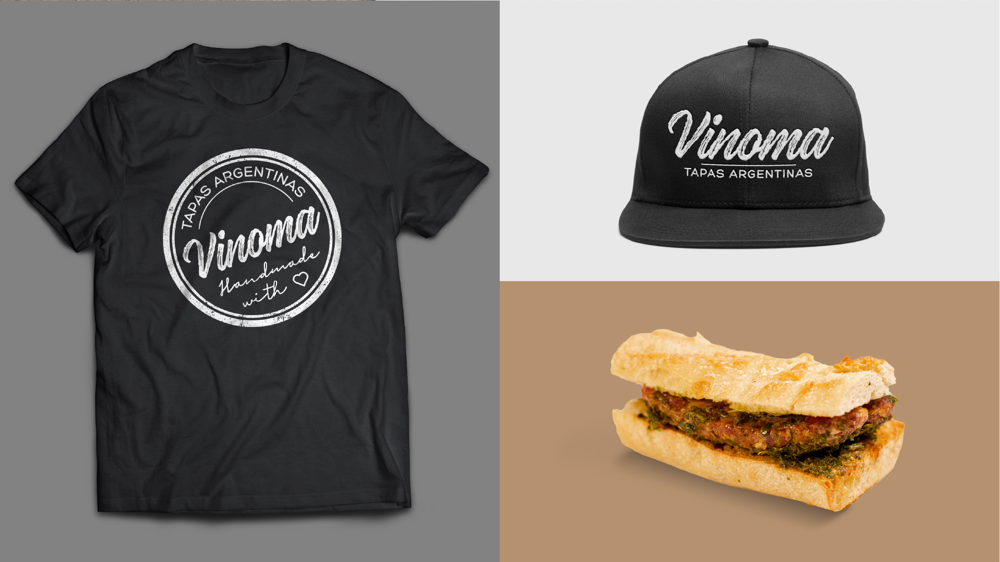
Artesanal no se declara: se dibuja.
Cualquier marca puede escribir «handmade» en su cartel. Lo que convence es que el trazo tenga irregularidades, que el papel no esté plastificado y que el dibujo sea de ese producto y no de un banco de imágenes. Seis años de piezas después, la marca sigue creciendo con el mismo repertorio: cada sabor nuevo entra como un dibujo más.